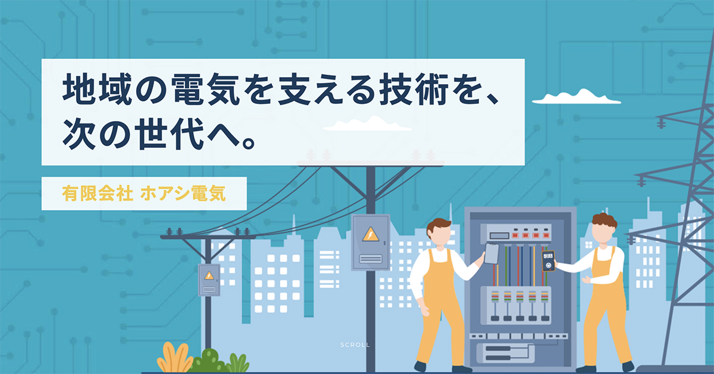
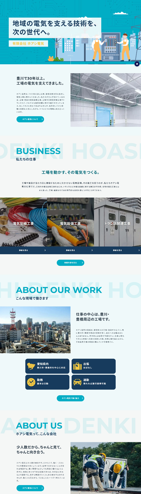
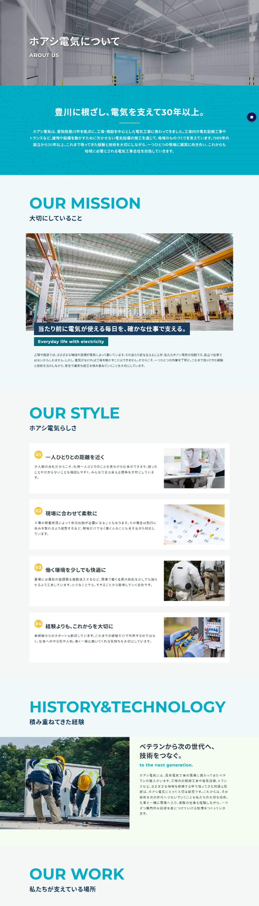
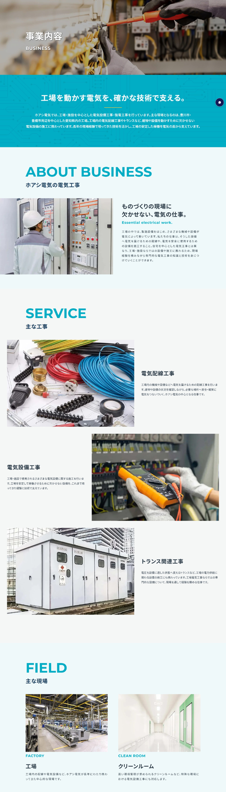
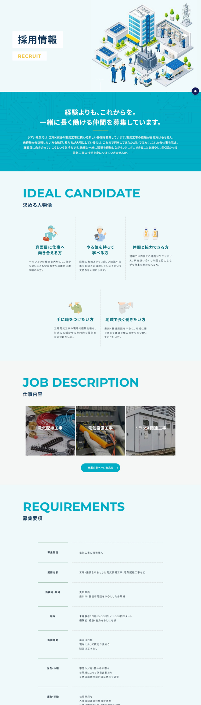

担当範囲
ワイヤーフレーム設計 / デザイン
外注様へコーディング指示
ライティング

ワイヤーフレーム設計 / デザイン
外注様へコーディング指示
ライティング
採用情報の強化
約1ヶ月
Figma / Photoshop
HTML / CSS / JavaScript
専門的で仕事内容をイメージしにくい電気工事だからこそ、実際の仕事や働く環境、未経験から成長していくイメージを分かりやすく整理。少人数ならではの距離の近さや、ベテランから技術を学べる環境、働く人への細かな気遣いまで丁寧に伝えています。
工場や電気設備、働く人々の姿を写真だけでなく、アイソメトリックイラストやアイコンを取り入れて視覚的に表現しています。 専門的で仕事内容をイメージしにくい電気工事だからこそ、「どんな場所で、どんな仕事をしている会社なのか」が直感的に伝わるようにしながら、若い求職者にも興味を持ってもらいやすい、親しみのある世界観に仕上げています。 レイアウトは白や淡いブルーの余白を広く取り、情報をすっきりと整理することで、昔ながらの工事会社という印象に寄りすぎない明るく現代的なデザインに。
COLOR
#01ADC5#163B5C#EFF9FA#F5C842TYPOGRAPHY
AaMontserret
幾何学的で整ったフォルムと、すっきりとした視認性。




工場・施設の電気設備工事や強電工事は、求職者にとって仕事内容をイメージしにくい分野です。そこで、工場や電気設備、働く人々を写真・アイコン・アイソメトリックイラストによって視覚化。
採用面では、良い条件だけを並べるのではなく、実際の働き方や仕事のリアルまで丁寧に伝えることを重視しました。残業・出張・休日・直行直帰など求職者が気になる情報に加え、未経験から仕事を覚えていくステップや、ベテランから技術を学べる環境も紹介。
ロゴカラーのシアンブルー #01ADC5を軸に、信頼感を与えるネイビー #163B5C、電気やエネルギーを連想させるイエロー #F5C842 をアクセントとして採用。